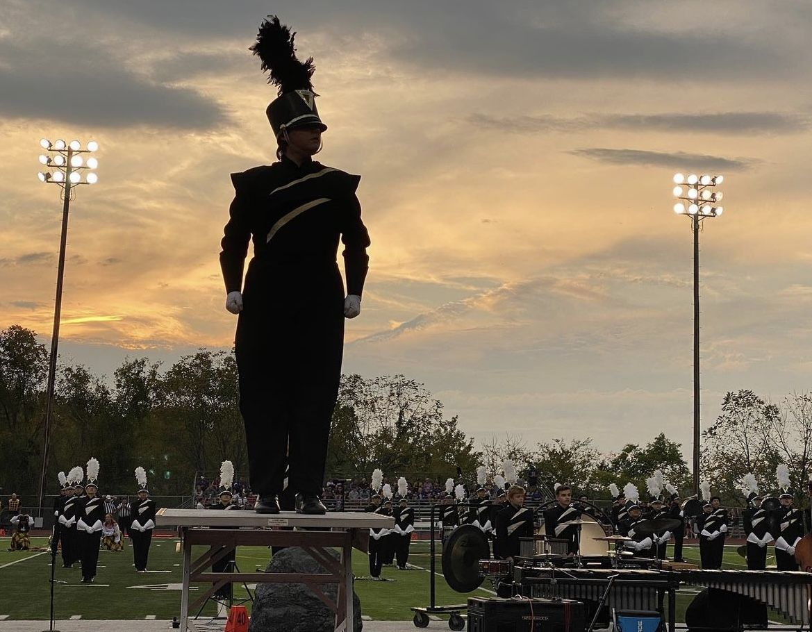
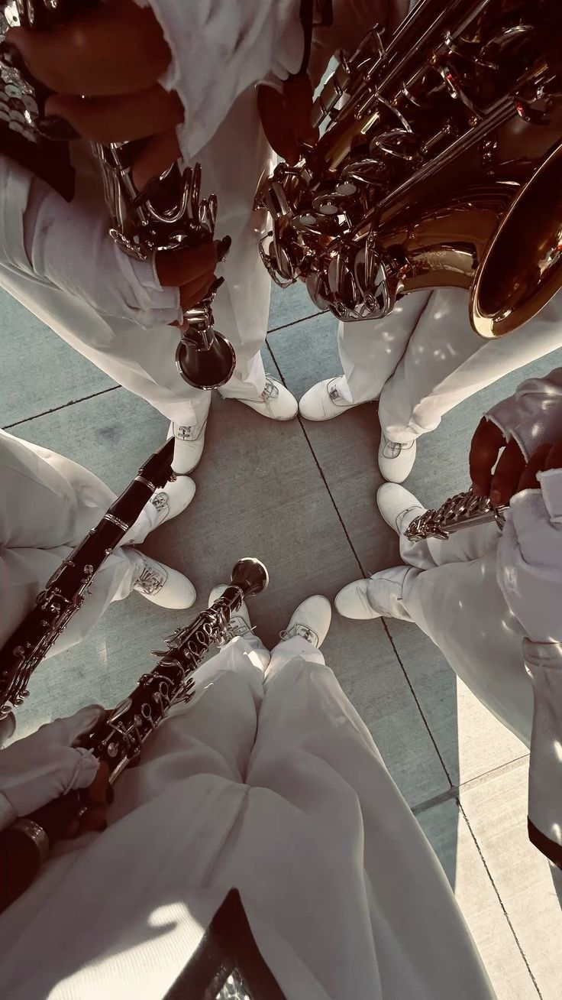
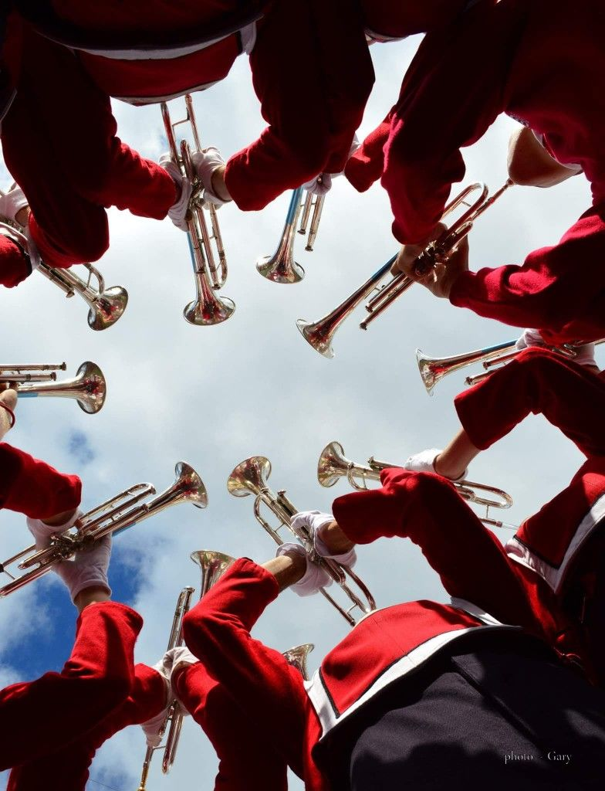
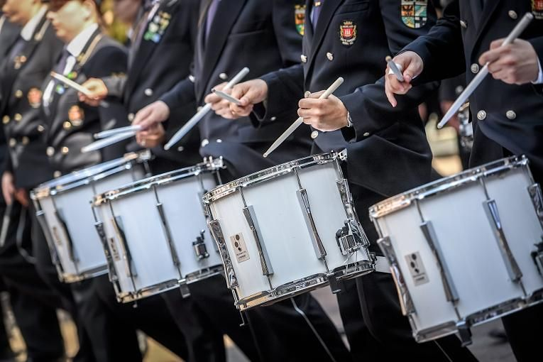
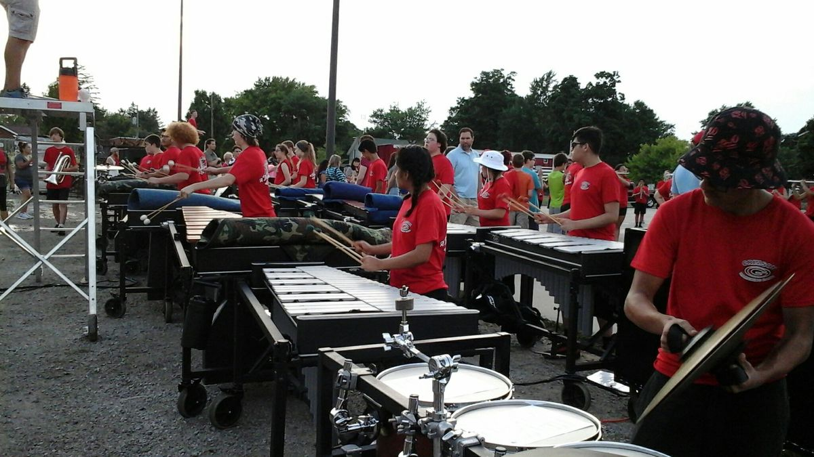

DRUM MAJOR
THE LEADER
The drum major is the leader of the marching band. They are responsible for conducting the band during performances, leading rehearsals, and serving as a liaison between the band and the director. To be a drum major is to be a strong, confident leader who can stay calm under pressure and inspire others to do the same and give their best.

WOODWINDS
THE MELODIC SHAPERS
The woodwind section is made up of instruments such as the flute, clarinet, and saxophone. These instruments are known for their ability to create beautiful melodies and harmonies. Woodwind players must have strong breath control and finger dexterity to play their instruments effectively. They often play a crucial role in shaping the overall sound of the band.

BRASS
THE POWERHOUSE & BOOM
The brass section is made up of instruments such as the trumpet, trombone, and French horn. These instruments are known for their ability to produce powerful, bold sounds that can cut through the noise of a large marching band. Brass players must have strong breath control and embouchure strength to play their instruments effectively. They often provide the backbone of the band's sound and are crucial for creating the energetic atmosphere that defines a successful marching band performance.

PERCUSSION
THE HEARTBEAT AND PULSE
The percussion section is made up of instruments such as the snare drum, bass drum, and cymbals. These instruments are known for their ability to provide the rhythmic foundation and dynamic accents that drive the music forward. Percussion players must have strong coordination and timing to play their instruments effectively. They often serve as the heartbeat of the band, providing the energy and momentum that keeps the performance moving.

PIT PERCUSSION- FRONT ENSEMBLE
THE RHYTHMIC FOUNDATION
The pit percussion and/or front ensemble section is made up of instruments such as the timpani, mallets, and various auxiliary percussion instruments. These instruments are known for their ability to provide the rhythmic foundation and dynamic accents that drive the music forward. Players must have strong coordination and timing to play their instruments effectively. They often serve as the rhythmic backbone of the band, providing the energy and momentum that keeps the performance moving.
COLOR GUARD
THE VISUAL STORYTELLERS
The color guard section is made up of performers who use flags, rifles, and other props to enhance the visual aspect of the marching band performance. These performers are known for their ability to create dynamic and visually stunning routines that complement the music being played by the band. Color guard members must have strong coordination, timing, and athleticism to perform their routines effectively. They often serve as the visual storytellers of the band, bringing the music to life through their movements and choreography.